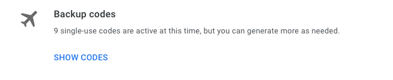
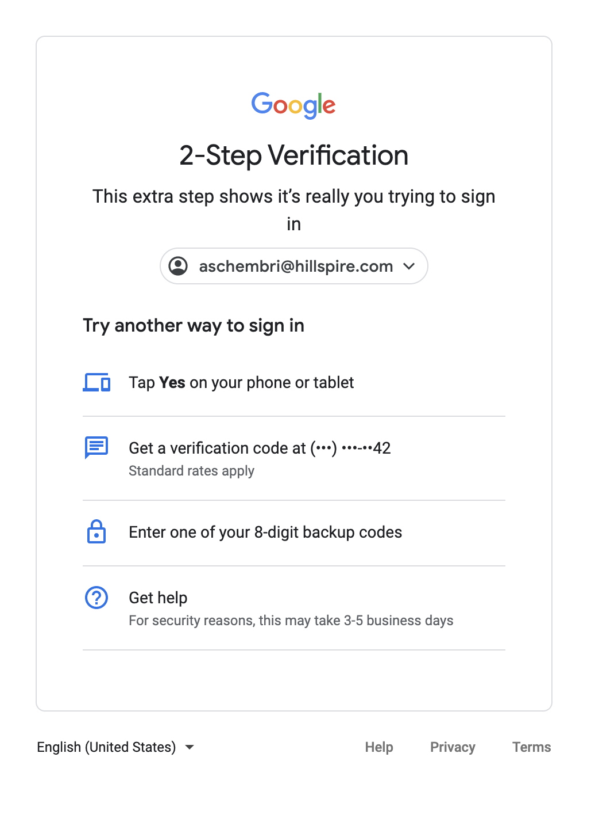

Google Verification Codes
Google Backup Verification codes can be used if you don’t have your phone or otherwise can't get codes via text, voice call, or Google Authenticator, you can use backup codes to sign in. If you don't have your security key, you can also use these codes to sign in. Keep in mind that each Backup Verification code is only good for one time used only. You can generate a new set of 10 Backup Verification codes whenever you want. After creating a new set, the old set automatically becomes inactive.
Create & View a set of backup codes
1. Go to your Google Account
2. On the left navigation panel, click Security

3. Under "Signing in to Google" click 2-Step Verification

4. Under "Backup codes", click Set up or Show codes. You can then print or download your codes and keep them with you.

If you can't find or run out of your backup codes, select Get New Codes, a new set of codes will auto generate and your old set will automatically become inactive.
Find your lost Backup Code
1. Locate your backup codes.
2. Sign into Gmail or another google service.
3. Enter your username and password.
4. When asked for your verification code, click "Try another way".

5. Select "Enter one of your 8-digit backup codes."

6. Enter your backup code.
Tip: As each code can be used only once, you might want to mark the code as used!